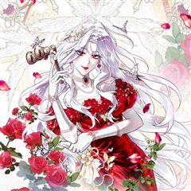
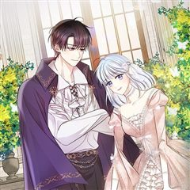
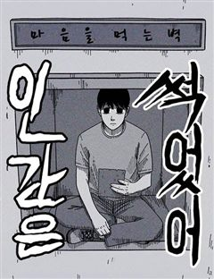

스릴러·공포 사이다·참교육 웹툰 추천 TOP 17
스릴러·공포 작품 중에서 사이다, 참교육, 인생역전, 다크히어로 같은 요소가 들어간 작품만 골랐어요. 네이버웹툰·카카오웹툰·레진코믹스에서 조건에 맞는 작품 17개 중 인기 순으로 17개를 골랐어요. 인기 TOP 3: 머니게임, 테이밍 마스터, 수상한 다이어트 클럽
2026-10-04 기준 · 성인 작품 제외
내 취향으로 더 좁혀서 추천받기 →-
1

-
2
 카카오웹툰
카카오웹툰테이밍 마스터
전 세계에서 가장 인지도 높은 VR(가상현실) 게임 ‘카일란’. 가상현실학과에서도 유명한 자타공인의 게임 폐인 이안. 서버에서 순위권에 드는 궁수로서 남부러울 것 없는 그가 우연히 획득하게 된 히든 클래스로의 전직을 위해 주위의 반대를 무릅쓰고 93레벨의 캐릭터를 과감히 삭제한다. 그…
스릴러·공포사이다미스터리학원물게임판타지카카오웹툰에서 보기 → -
3
 네이버웹툰
네이버웹툰수상한 다이어트 클럽
모태 통통 ‘고양순’은 부모님의 등쌀에 못이겨 박박사 다이어트 클럽에 입소한다. 어딘가 수상해 보이는 박박사지만, 그녀의 이력 만큼은 누구보다 확실하다. 성공률 100%를 자랑하는 이곳의 퇴소 조건은 단 하나, ‘목표 체중을 다 감량해야만 하는 것!' 과연 100kg가 넘는 양순 역시…
스릴러·공포인생역전바디 호러고자극스릴러미스터리네이버웹툰에서 보기 → -
4
 카카오웹툰
카카오웹툰성자는 개뿔, 현대의학의 힘이다
천재 의사로 의학계에 힘을 떨치던 유성. 수술실을 집처럼 여기던 그는 어느 날 교통사고로 죽게 되고. 정신을 차려보니 다른 세계로 떨어져 버렸다. 그런데 성녀... 성국... 힐링 마법이라고? "내가 얼마나 힘들게 의학을 배웠는데, 손만 대 놓고 치료 끝? 아, 놔. 맛탱이 가 버리겠…
스릴러·공포사이다미스터리학원물환생카카오웹툰에서 보기 → -
5
 카카오웹툰
카카오웹툰변경백 서자는 황제였다
바리엘 제국의 마법사이자 어린 나이에 황제가 된 이안은 조카의 반란으로 감옥에 갇힌다. 이안을 구해주러 온 마법사 나움은 금지된 시공간 마법을 사용한다. 금지된 마법은 황제 이안을 과거 100년으로 이끌고 100년 전 멸문한 변경백 가문의 서자 이안에게 빙의한다. 서자 이안은 접경지인…
스릴러·공포사이다서스펜스환생카카오웹툰에서 보기 → -
6
 카카오웹툰
카카오웹툰운빨
내 삶에서 그렇게 터지지 않던 운빨이 게임을 접기 직전, 단 한 방에 터졌다! 세계 최초 가상현실 게임 <서킷>에서 인생 역전하려던 이기호, 4억 명의 플레이어 중 그 누구도 손에 넣지 못한 레어 아이템이 그의 손에 들어왔다! “이런 게 진짜 인생역전 아니냐!”
스릴러·공포사이다미스터리게임판타지카카오웹툰에서 보기 → -
7
 카카오웹툰
카카오웹툰괴공유록
불의의 사고로 의식을 잃었다가 잠에서 깼을 땐, 삼십 년이란 세월이 훌쩍 지난 뒤였다. 그 사이 사문인 백검문은 쇠락의 길을 걷다 무림 세력에게 멸문지화를 당했으며 사형이자 장문인이었던 진영림이 비명 했다는 비보를 듣게 되는데… 존재 자체만으로도 강호 무림이 숨을 죽인 존재였던, 검공…
스릴러·공포사이다미스터리액션복수극카카오웹툰에서 보기 → -
8카카오웹툰
이 결혼은 반드시 성공합니다
황제의 검, 황제의 개, 황제의 숨겨진 애인으로 불리는 기사 이오나 모드로프. 모드로프가의 사생아로 태어나 혹독한 훈련과 가족들의 폭언과 폭력을 견뎌내고 황제의 기사가 되었지만 이오나에게 돌아온 것은 원하지 않는 상대와의 정략 결혼, 그리고 황제의 배신뿐이었다. “이오나, 정신 차려.…
스릴러·공포사이다미스터리로판성장물카카오웹툰에서 보기 → -
9
 네이버웹툰
네이버웹툰새동네
오갈 데 없는 노인들이 산간벽지를 개간해 작은 마을 공동체를 이루며 살기 시작하였으니, 이름하여 새동네! 어느 날, 새동네 일대가 신도시 재개발에 휩싸이고 부정한 세력들이 들어오자 마을의 평화와 존립을 위해 결국 노인들이 나서며 경고하는데…... “잠 자는 사자의 코털은 건드는 게 아…
스릴러·공포참교육고자극스릴러액션범죄네이버웹툰에서 보기 → -
10
 네이버웹툰
네이버웹툰살인예정자
"네 숫자가 보인다. 네가 앞으로 몇 명을 죽일지가." 죽이기 전에 죽여버리면 살인은 일어나지 않는다. 그 일념 하에 ‘살인예정자’들을 하나씩 처단해가는 연쇄살인마 넘버. 살인을 통해 살인 없는 세상을 만들겠다는 그의 바람은 이루어질 수 있을까?
스릴러·공포다크히어로고자극스릴러시리어스범죄네이버웹툰에서 보기 → -
11

카카오웹툰망나니 악녀가 돌아왔다
사형을 선고받고 죽었다. "자네를 악녀로 죽이기엔 조금 아까워 졌다네." "어떤가? 나는 자네에게 기회를 주고 싶은데." 아니, 죽었다고 생각했다. 그런데 죽기 직전 나타난 원수같은 놈이 한 말 때문일까? '게런, 이 개새끼가..!' 눈을 뜨니 10년 전 과거였다. 그것도, 다른 세계…
스릴러·공포사이다미스터리로판회귀카카오웹툰에서 보기 → -
12

카카오웹툰원작을 건드리면 생기는 일
원작 속 엑스트라에 빙의했지만, 아버지에게 술병으로 머리 맞고 기절했다. 사흘 뒤 겨우 눈을 뜬 '세라피'는 아버지부터 내쫓기로 했다. 후레자식이 되더라도 일단은 살아야 할 것 아닌가? 가정폭력범이자 도박중독자인 아비 놈의 작위를 빼앗아서 파탄난 가문을 되살리고 원래 세계로 돌아가겠어…
스릴러·공포사이다미스터리로판로맨틱코미디카카오웹툰에서 보기 → -
13
 네이버웹툰
네이버웹툰고독살인
무시 당하며 살아온 밑바닥 인생의 중년 남성 고영도는 술에 취해 사적인 장면이 담긴 영상을 남긴다. 그날의 영상이 실수로 생중계 되자, 외면 받던 그의 비참한 일상은 뜻밖의 관심을 받는다. 위로처럼 보였던 관심은 곧 고영도의 삶을 예상치 못한 방향으로 이끌기 시작한다.
스릴러·공포인생역전고자극드라마자극적인블랙코미디네이버웹툰에서 보기 → -
14
 네이버웹툰
네이버웹툰악녀의 시집살이는 즐겁다
사랑 하나만 믿고 시댁살이를 견딘 ‘에시카’. 그러나 남편은 자신의 친구와 부정을 저지르고, 큰 사고까지 당하는 과정에서 전생의 기억을 떠올린다. 그녀는 바로 악녀 ‘천영령’이었고, 이곳은 책속 세상이었다는 것. 자신의 전생과 자신을 괴롭힌 사람들과의 악연을 떠올린 에시카는 결국 공작…
스릴러·공포사이다자극적인빌런판타지네이버웹툰에서 보기 → -
15
 카카오웹툰
카카오웹툰바람의 마도사
'모든 것을 잃은 소년 바람의 마도사가 되다.' 정령과 마법이 공존하는 세계. 천재적인 마법 재능을 타고났으나 무인 가문의 아들이라는 숙명 아래 힘을 숨긴 채 자라온 소년 시몬 하이스. 어느 날 아버지 클라인은 자신의 욕심을 위해 시몬을 죽이려 들고, 검술 스승 루제트와 그의 딸 디아…
스릴러·공포사이다서스펜스학원물성장물카카오웹툰에서 보기 → -
16

네이버웹툰인간은 썩었어
어릴 적부터 학대를 받아온 '진영'. 그에게 처음으로 손을 내밀어 준 건 지금의 아내였다. 하지만 그런 아내가 병에 걸려 막대한 병원비가 필요해 지는데... 그렇게 절망에 빠져 하루하루를 보내는 진영에게 우연인지 필연인지 거액의 돈을 벌 기회를 주는 '마음을 먹는 벽'이 나타나게 된다…
스릴러·공포인생역전2024 최강자전고자극스릴러자극적인네이버웹툰에서 보기 → -
17
 네이버웹툰
네이버웹툰폐쇄교실
하나뿐인 동생이 학교폭력으로 세상을 떠났다. 그 충격으로 어머니마저 잃을 위기에 처한 순간, 스스로를 옥죄던 질문의 답은 하나로 귀결된다. "복수." 가치를 따질 수조차 없던 내 가족을 짓밟은 너희. 이제 너희의 가치는 내가 정한다 "살고 싶다면, 목숨값을 가져와라."
스릴러·공포참교육2025 지상최대공모전시리어스사회고발네이버웹툰에서 보기 →